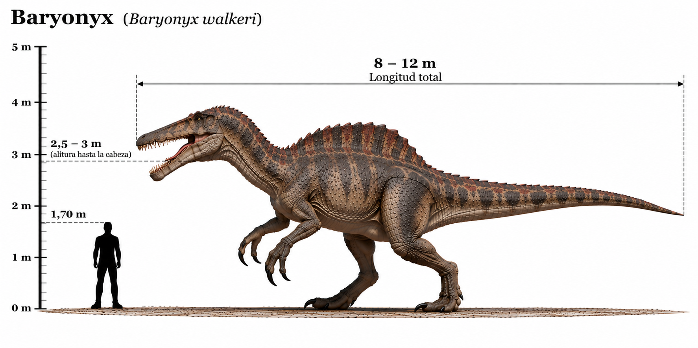

Baryonyx walkeri

El Baryonyx walkeri fue un dinosaurio terópodo carnívoro que habitó Europa durante el Cretácico temprano, hace aproximadamente 125 millones de años. Se caracterizaba por su cráneo alargado y estrecho, parecido al de un cocodrilo, con numerosos dientes cónicos adaptados para sujetar presas resbaladizas. Una de sus características más destacadas era la enorme garra curvada del primer dedo de cada mano, que podía superar los 30 centímetros de longitud. El Baryonyx es especialmente conocido por sus hábitos piscívoros. En la región de su estómago se encontraron restos de peces, lo que constituye una evidencia directa de que se alimentaba de ellos. Sin embargo, su dieta no se limitaba exclusivamente a los peces, ya que también podía consumir otros animales terrestres.
- Grupo: Terópodo.
- Familia: Spinosauridae (espinosáuridos).
- Período: Cretácico temprano (hace aproximadamente 125 millones de años).
- Alimentación: Carnívoro, principalmente piscívoro.
- Longitud: Aproximadamente 7,5–10 metros.
- Altura: Aproximadamente 2–2,5 metros hasta la cadera.
- Localización: Europa (actual Reino Unido).
